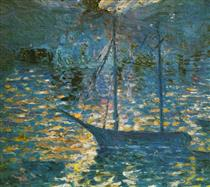
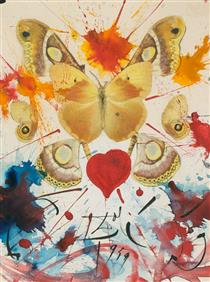

Boat
Boat (1944) é uma pintura de Salvador Dalí que retrata um barco em uma cena surrealista, com a imagem do barco suspensa e sem interação com o ambiente, típica do estilo onírico do artista. A obra reflete temas de distorção do tempo e do espaço, características do surrealismo, onde elementos comuns são transformados para explorar o inconsciente e a realidade distorcida.
Extravaganza
Extravaganza (1945) é uma pintura surrealista de Salvador Dalí que mistura elementos fantásticos e realistas, com figuras distorcidas e cores vibrantes. A obra explora temas de excessos e contradições, refletindo o estilo onírico de Dalí, que manipula a percepção e aborda o inconsciente e desejos reprimidos. Apesar de ser menos conhecida, Extravaganza exemplifica bem o surrealismo e a técnica detalhada do artista.
Figura

Figura (1938) é uma obra surrealista de Salvador Dalí que retrata uma figura humana distorcida, desafiando as leis da física e da anatomia. A pintura explora temas de transformação e dissolução, refletindo o interesse de Dalí pelo inconsciente e pelos processos psíquicos. Com sua técnica meticulosa, a obra cria uma atmosfera inquietante, típica do estilo surrealista do artista.
Still Life

Still Life (1921) é uma obra inicial de Salvador Dalí, onde ele retrata uma natureza morta com objetos como frutas e garrafas, usando uma técnica detalhada e realista. A pintura reflete o interesse de Dalí pela representação precisa da realidade, antes de adotar plenamente o estilo surrealista que se tornaria sua marca registrada.
Young Girls

O quadro Young Girls (1929) de Salvador Dalí faz parte de seu período surrealista. A obra apresenta figuras femininas distorcidas e enigmáticas, refletindo o interesse de Dalí pelo inconsciente e pelo simbolismo. A pintura mistura realidade e sonho, com uma abordagem de distorção e perspectiva. Ela também pode refletir a relação de Dalí com Gala Éluard, sua futura esposa, e suas obsessões pessoais. A obra é um exemplo da transição de Dalí para o estilo surrealista.